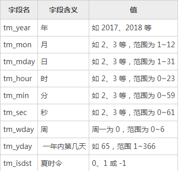

Python基础学习笔记（六）
time模块：
时间的三种表示方法：
1.格式化字符串
2.时间戳 用来表示和1970年的时间间隔，单位为s
3.元组 struct_time 9个元素
time的struct_time对象是一个命名元组，用于表示时间对象，包括9个字段属性：

time模块的函数：
time.time() 获取时间戳
time.sleep() 延迟多少秒
time.gmtime() 获取utc时间
time.localtime() 获取本地时间
import time
print(time.time())
print(time.sleep(1))
print(time.gmtime())
print(time.localtime())
x = time.localtime()
print(x.tm_sec)time.strftime(格式，元组) 将元组转换为标准格式输出
time.strftime('%Y %m %d %X') #不写默认为localtime元组time.process_time() 返回当前进程处理器运行时间
time.pref_counter() 返回性能计数器
time.monotonic() 返回单向时钟
datetime模块：
包括两个常量：
包括的对象：
通过datetime模块的date.today()函数可以返回表示当前日期的date对象，通过其实例对象方法，可以获取年、月、日等信息
通过datetime模块的datetime.now()函数可以返回表示当前日期时间的datetime对象，通过其实例对象方法，可以获取年、月、日、时、分、秒等信息
import datetime
d = datetime.date.today()
dt = datetime.datetime.now()
print('当前日期是：%s' % d)
print('当前日期与时间是：%s' % dt)
print('ISO格式的日期与时间是：%s' % dt.isoformat())
print('当前的年份是：%s' % dt.year)
print('当前的月份是：%s' % dt.month)
print('当前的日期是：%s' % dt.day)
print('dd/mm/yyyy格式是：%s/%s/%s'% (dt.day,dt.month,dt.year))
print('当前的小时是：%s' % dt.hour)
print('当前的分钟是：%s'% dt.minute)
print('当前的秒是：%s' % dt.second)
random模块：
random.random() 随机生成(0,1)的浮点数
random.randint() 随机生成(0,1)的整数
random.randrange(start,stop[,step]) 返回随机整数N且属于range系列
random.choice(seq) 从序列seq中随机返回一个元素
random.sample(population,k) 从非空序列中随机抽取k个元素，组成列表
random.uniform(start,stop) 随机生成指定区间的浮点数
random.shuffle(seq) 将seq进行乱序
sys模块：
sys.version 获取python解释器版本信息
sys.stdout 标准输出
sys.argv 获取参数，第一个参数是py文件路径
sys.exit() 标准退出exit(0)